Components
Most components come as prefabs: drag them in from the SDK folder. A few are added from the Add Component menu; those are grouped together in Add Component Scripts.
You can create some very complex puzzles without any C# scripting. Press In Order is a very useful one.
Contents
- Essential Items: Puzzle SDK, Gourd Vice, Box, Start Switch, Live Signal, Confetti, Door, Pillow
- Add Component Scripts: Custom Item, Seat, Press In Order, Hider, Presence Sensor, Soundproof, Radio Dead Zone, Reverb Zone
- Buttons and Switches: Hold Button, N-Hold Button, Poke Button, Sim Press Switch, Switch
- Pegs: Circle Peg, Circle Peg Board, Display, Peg Board, Peg Tile, Sound Peg, Sound Peg Answer, Telescope
- Feedback: Count Input, Count Validator, Light, Progress Bar, Timer, Validator
- Tower: Gourd Plinth, Tower Button
- Other: Firework Launcher, Glass, Intercom, Intercom Speaker, No Items Gate, Timer Goal, Timer Spawner, Vanilla Item
Essential Items
Puzzle SDK
PuzzleSDK
The puzzle's main component, one on the root object. The puzzle spawns in-game exactly where this object sits in your scene (position and rotation), and it tells you when the puzzle starts, stops and is won.
| Field | What it does |
|---|---|
| Debug Teleport | Ctrl+F1 (creator keys on) teleports you here. |
| Puzzle Type | Puzzle: rewards a gourd (needs one Gourd Vice or one Box to hold the gourd, and one Pillow). Tower: a gourd tower (needs 10+ Gourd Plinths). None: anything else. |
| Event | Fires when |
|---|---|
| On Puzzle Start | A Start Switch was flipped on. |
| On Puzzle Stop | The puzzle stopped. Also fires once when it spawns: set the starting look here. |
| On Win | Win() was called. |
| Value | What it is |
|---|---|
IsWon (bool) |
Win() has been called. |
IsRunning (bool) |
A Start Switch is on. |
PuzzleSDK.IsHost (bool) |
True on the host and in single player. Functions that change the puzzle only work there. |
| Function | What it does |
|---|---|
Win() |
Host only. Fires every Confetti and releases every Gourd Vice, then On Win. |
Gourd Vice
PuzzleGourdVice
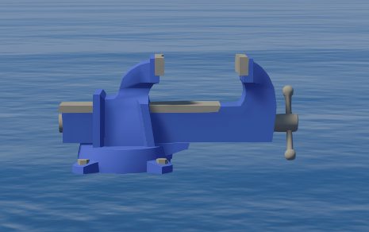
docs/images/components/gourd-vice.pngThe game's gourd vice. PuzzleSDK.Win() releases it. Every Puzzle needs either a Gourd Vice or a Box to hold its gourd, not both.
Box
PuzzleBox
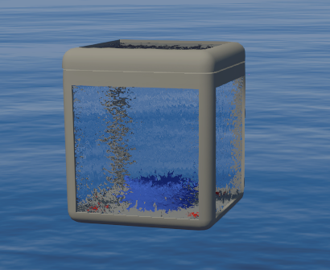
docs/images/components/box.pngThe game's glass box with a lid. Starts closed.
In a Puzzle with no Gourd Vice, the box holds the puzzle's gourd, and the box's glass and lid stop players reaching it until the box is open. Picking the gourd up completes the puzzle: there is no win event. The gourd is saved as held, in the tower, or lost, and is never put back in the box once someone has held it. A puzzle needs either a Gourd Vice or a Box; if it has both, only the vice's gourd is used.
| Value | What it is |
|---|---|
IsOpen (bool) |
The lid is open. |
| Function | What it does |
|---|---|
Open() |
Host only. Stays open until Close(). |
HoldToOpen() |
Host only. For a Hold Button's On Pressed: open while held. |
Close() |
Host only. |
Start Switch
PuzzleStartSwitch
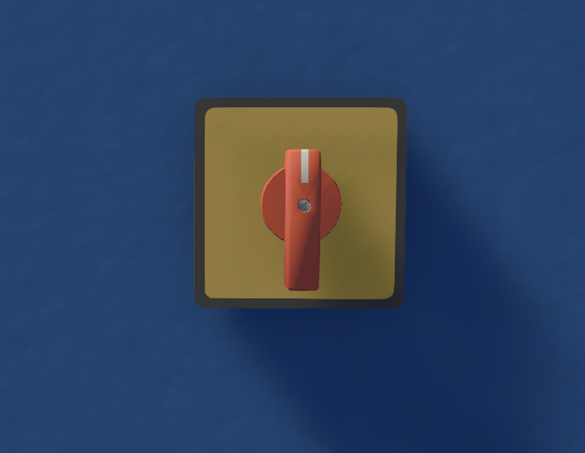
docs/images/components/start-switch.pngThe game's start knob. On fires Puzzle SDK's On Puzzle Start, off fires On Puzzle Stop.
Live Signal
PuzzleLiveSignal
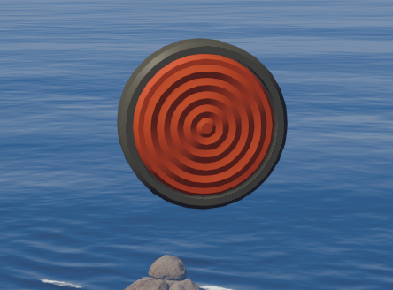
docs/images/components/live-signal.pngThe game's "live" lamp. Lights by itself while the puzzle is running.
Confetti
PuzzleConfetti
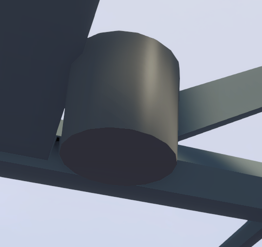
docs/images/components/confetti.pngThe game's confetti cannon. PuzzleSDK.Win() fires it.
Door
PuzzleDoor
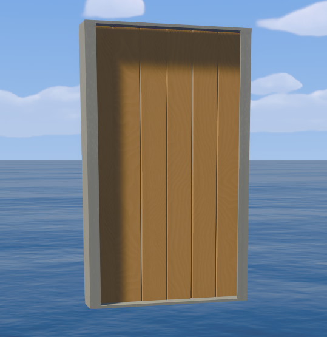
docs/images/components/door.pngThe game's double door.
| Field | What it does |
|---|---|
| Mode | Open When Puzzle Active: open while the puzzle is on, closed while it's off. Close When Puzzle Active (default): closed while the puzzle is on, open while it's off. Control With Functions Only: starts closed and only Open() / Close() move it. Open() and Close() still work in every mode. |
| Soundproof | Blocks voices while closed. |
| Function | What it does |
|---|---|
Open() / Close() |
Host only. |
Pillow
PuzzlePillow
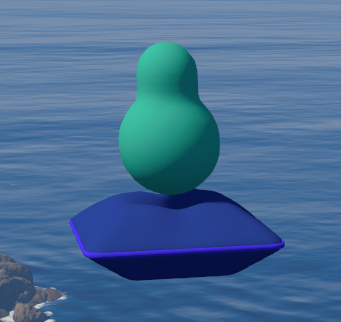
docs/images/components/pillow.pngThe game's gourd valet pillow. Hidden in-game. It appears, with the gourd on it, only if players won this puzzle but lost the gourd last time (it wasn't held or in the tower).
Add Component Scripts
These aren't prefabs. Add them to your own objects with Add Component → Big Puzzle SDK.
Custom Item
PuzzleItem
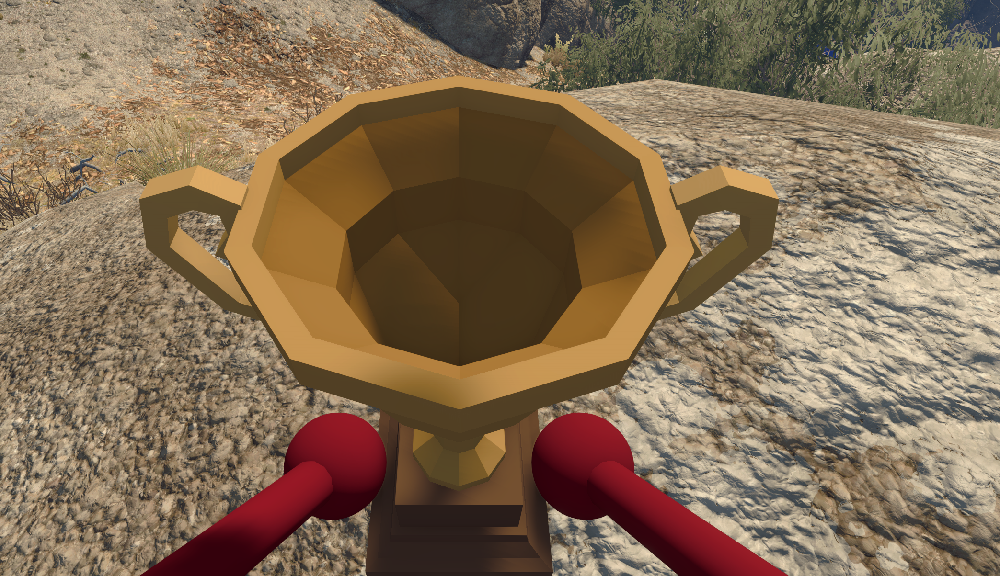
docs/images/components/custom-item.pngYour own model as an item players can pick up, carry and throw. Put it on an object with a mesh (or meshes under it). The game fits one box collider around all the meshes; colliders on the model are not used.
| Field | What it does |
|---|---|
| Pivot | Optional empty object marking where the item is held and spun when thrown, and which way it points. A yellow cross shows it in the Scene view. Empty = this object's origin. |
| Mass | 1 is about a cowbell. |
| Sounds | Grab, release and bump sounds copied from a game item: Peg, Cowbell, Buoy, Football, Cannonball, Torch, FoldingChair, WalkieTalkie, Binoculars, Kettle, NightVisionGoggles, LaserPointer, Clock, Pomodoro, Sign, FlareGun, Blindfold, Megaphone, SalonBrush, Laptop, FoldingMap, CoordinatesTracker, GourdHolder, GourdCradle, Key, PermoSign. |
| Can Belt / Can Backpack | Players can put it on their belt / in their backpack. |
| Saves On Reload | Saved like gourds. If held (hand, belt or backpack) when the game saves or the host reloads (Ctrl+F2) it returns at the spawn area and stays saved as held while it lies there. Once put down elsewhere it only saves while held. Its position is never saved. |
| Event | Fires when |
|---|---|
| On Picked Up | Picked up or put in a backpack (host fires it). |
| On Dropped | Let go of. |
| Value | What it is |
|---|---|
IsHeld (bool) |
Held (hand, belt or backpack). |
Seat
PuzzleSeat
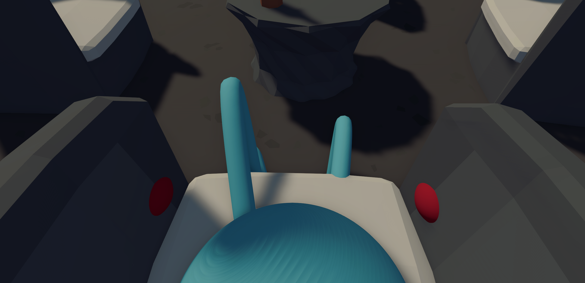
docs/images/components/seat.pngA seat players click to sit in (Jump to stand). Put it where the player's bottom goes. Your model stays as it is; the editor only draws the click box.
| Field | What it does |
|---|---|
| Pose | The game's seats: MidcenturyChair, FoldingChair, WoodenChair, ListeningChair, CouchLeft, CouchMiddle, CouchRight, BenchA, BenchB, BenchC, Stump, CarouselPony, ChairliftLeft, ChairliftRight, TrainSeatA to TrainSeatE. |
| Seat Offset | Where the bottom goes, from this object (green ball). |
| Seat Turn | Facing, degrees around up (green arrow). |
| Click Center / Click Size | The box players aim at (blue). |
| Event | Fires when |
|---|---|
| On Sit | A player sat (host fires it). |
| On Stand | The player got up. |
| Value | What it is |
|---|---|
IsOccupied (bool) |
A player is sitting in it. |
Press In Order
PuzzlePressInOrder
Lights a random pair (a Light and its button) and waits for players to press that button. Each right press fills the Progress Bars by one and lights the next pair (it can repeat). A wrong button turns the lights off and fires On Fail.
| Field | What it does |
|---|---|
| Pairs | Rows of a Light and a Hold Button, Poke Button or Presence Sensor. |
| Progress Bars | All go up together on a right press. |
| Rounds | Right presses to win. Begin() sets every bar's Total to this. |
| Hold At End | Timed mode (below). |
| Phase Seconds | Timed mode: how long each pair stays lit. Default 5. |
| Phase Bars | Timed mode: bars that start full and drain through the phase. Use separate bars from Progress Bars. |
| Event | Fires when |
|---|---|
| On Begin | Begin() was called. |
| On Fail | A wrong button was pressed, or the wrong buttons were held at the end of a phase. Every Progress Bar and Phase Bar gets Fail(). |
| On End | However it ended: win, End(), or after On Fail. |
| Value | What it is |
|---|---|
IsRunning (bool) |
A round is in progress. |
| Function | What it does |
|---|---|
Begin() |
Host only. Sets bar Totals, empties them, fires On Begin, lights a pair. |
End() |
Host only. Stops, calls Fail() on every bar, fires On End. |
Hold At End: pressing does nothing during a phase. When the time is up the lit pair's button must be held and no other, or it fails. Use Hold Buttons or Presence Sensors; a Poke Button can't be held.
Hider
PuzzleHider
Keeps this object and everything under it only in the ticked lobby sizes. In other sizes it is switched off and SDK components under it aren't built. Use it for 2-, 3- and 4-player versions of a room.
| Field | What it does |
|---|---|
| Show 2 / Show 3 / Show 4 | Show in 2-, 3- and 4-player lobbies (4 includes larger). |
Presence Sensor
PuzzlePresenceSensor
A button players press by standing in it. Add a Box (or other) Collider, at least 2 m tall and starting at the floor. It becomes an invisible trigger in-game. Works wherever a button does, including Press In Order.
| Field | What it does |
|---|---|
| Required Players | Players needed inside at once. Default 1. |
| Event | Fires when |
|---|---|
| On Pressed | Enough players are inside. |
| On Released | Too few are left inside. |
| On Player Entered | A player steps in. |
| On Player Left | A player steps out. |
| Value | What it is |
|---|---|
PlayerCount (int) |
Players inside now. |
Soundproof
PuzzleSoundProof
Makes the colliders on this object and its children block voices, like the game's soundproof rooms. Put it on one wall or on the parent of a room. The host decides; everyone follows, late joiners included.
| Field | What it does |
|---|---|
| Material | Wood or Glass. Both block voices. |
| Value | What it is |
|---|---|
IsBlocking (bool) |
Blocks voices and players. Starts true: call Open() from On Puzzle Stop to start open. |
| Function | What it does |
|---|---|
Open() |
Host only. Colliders off: walk and talk through. |
Close() |
Host only. Blocks again. |
Radio Dead Zone
PuzzleRadioDeadZone
Walkie-talkies and megaphones inside the collider(s) here can't send or receive. Add a Box (or other) Collider; it becomes an invisible trigger and any renderer is hidden.
Reverb Zone
PuzzleReverbZone
Sets a room's echo by hand while a player's ears are inside the collider(s) here (invisible triggers in-game). Anything not overridden is still measured by the game, which only "sees" its own world layers, including walls with Soundproof on them. Ordinary puzzle walls don't count.
| Field | What it does |
|---|---|
| Override Room Size / Room Size | 0 = tiny room, 1 = huge hall. |
| Override Outdoorness / Outdoorness | 0 = enclosed, 1 = open air (no echo). |
| Override Reverb Time / Reverb Time | 0 = no tail, 1 = very long. |
| Override Diffusion / Diffusion | 0 = distinct echoes, 1 = smooth wash. |
Buttons and Switches
Hold Button
PuzzleButton
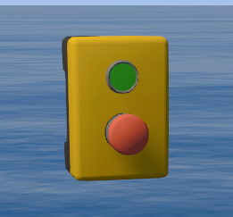
docs/images/components/hold-button.pngThe game's hold button. On Pressed when pushed in, On Released when let go. Wire On Pressed to HoldToOpen() on a Box or Gourd Plinth for "open while held".
| Event | Fires when |
|---|---|
| On Pressed | Pushed in. |
| On Released | Let go. |
N-Hold Button
PuzzleButtonNHold
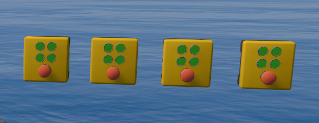
docs/images/components/n-hold-button.pngThe game's N-hold button (Black Tower). Every button with the same Group must be held at once. The case shows 2, 3 or 4 dots for the group size and a dot lights per held button. Every button in the group fires its events, so wire them on only one.
| Field | What it does |
|---|---|
| Group | Buttons in this puzzle with the same group are held together. |
| Event | Fires when |
|---|---|
| On All Held | Every button in the group is held. |
| On All Released | They were all held, and one was let go. |
| Value | What it is |
|---|---|
IsHeld (bool) |
This button is held. |
AllHeld (bool) |
The whole group is held. |
GroupSize (int) |
Switched-on buttons in the group. |
Poke Button
PuzzlePokeButton
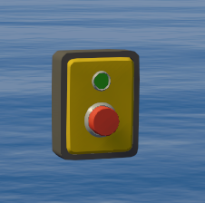
docs/images/components/poke-button.pngThe game's one-click button. After a press it stays off until re-armed.
| Field | What it does |
|---|---|
| Auto Enable Seconds | 0 = stays off after a press, otherwise it re-arms after this long. |
| Event | Fires when |
|---|---|
| On Pressed | Poked. |
| Value | What it is |
|---|---|
IsClickable (bool) |
Can be poked. Always starts true: call SetClickable(false) from On Puzzle Stop to start it off. |
| Function | What it does |
|---|---|
SetClickable(bool value) |
Host only. true also re-arms a button just pressed. |
Sim Press Switch
PuzzleSimPressSwitch
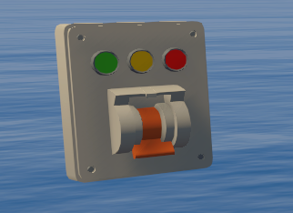
docs/images/components/sim-press-switch.pngThe game's "press together" lever. Pressed, it goes yellow, then red, then off. If every switch in the Group is yellow at once, all go green and fire On Success.
| Field | What it does |
|---|---|
| Active Seconds | Yellow: the window for the others to be pressed. |
| Timeout Seconds | Red (or green after success): time before it can be pressed again. |
| Group | Switches in this puzzle with the same group are linked. |
| Event | Fires when |
|---|---|
| On Success | Every switch in the group was pressed in time. |
Switch
PuzzleSwitch
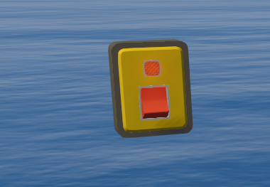
docs/images/components/switch.pngThe game's light switch.
Always starts off. Its position is saved with the game, so after the lobby restarts it comes back as it was (and the matching event fires).
| Event | Fires when |
|---|---|
| On Turned On / On Turned Off | Flipped on / off. |
| Value | What it is |
|---|---|
IsOn (bool) |
Flipped on. |
Pegs
Circle Peg
PuzzleCirclePeg
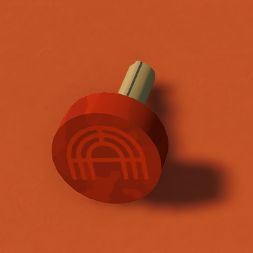
docs/images/components/circle-peg.pngThe game's round peg (Egg Hunt), a grabbable prop for the circle peg board.
| Field | What it does |
|---|---|
| Color | White = the game's own (red). |
Circle Peg Board
PuzzleCirclePegBoard
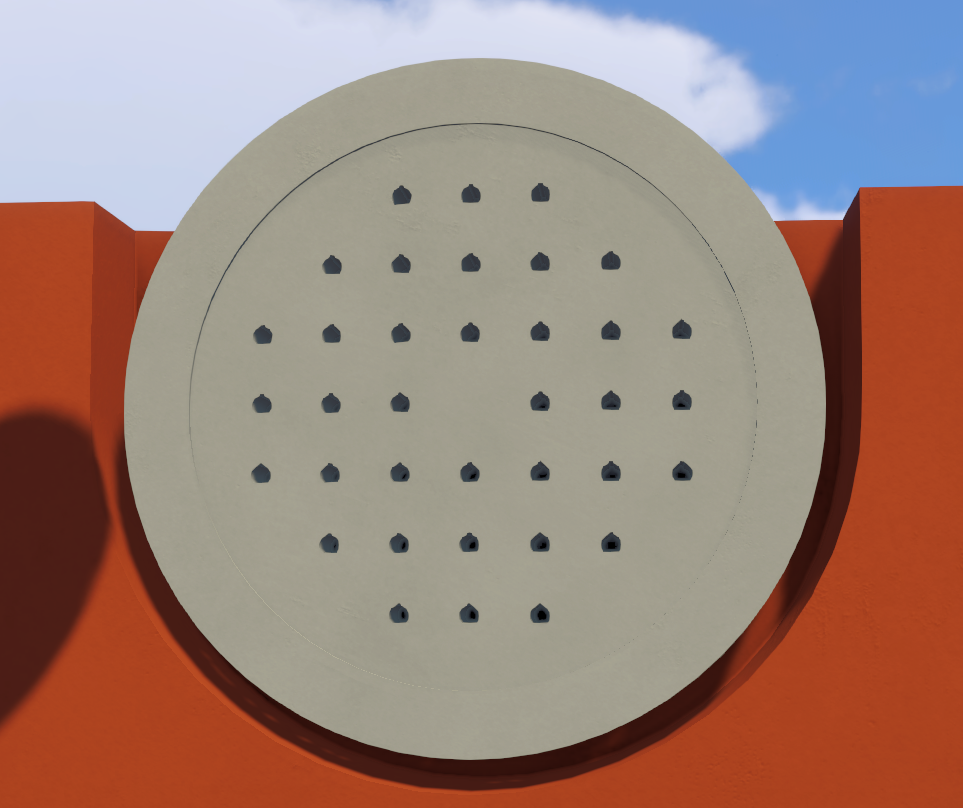
docs/images/components/circle-peg-board.pngThe game's round peg board (Egg Hunt).
| Event | Fires when |
|---|---|
| On Full | Every slot has a peg. |
| On Not Full | A peg was taken off a full board. |
| Value | What it is |
|---|---|
SlotCount / FilledCount (int) |
Slots, and slots with a peg. |
IsFull (bool) |
Every slot has a peg. |
Display
PuzzleDisplay
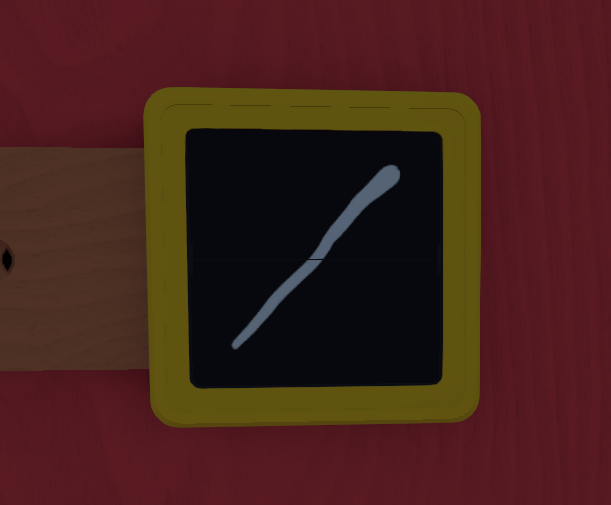
docs/images/components/display.pngThe game's split-flap image display. Every time the puzzle starts each of its flaps takes a different Peg Tile from the puzzle and shows that tile's picture (any image set). Every tile counts the same, so with ten triangles and one circle it will most likely show a triangle, and a picture only repeats if the puzzle really has more than one tile of it. If the puzzle has fewer tiles than flaps, the extra flaps stay blank (the editor warns about this when the puzzle has a Peg Board). It is blank before the first start and goes blank again when the puzzle stops (a puzzle with no Start Switch picks once at spawn). A Peg Board can use it as its answer.
| Field | What it does |
|---|---|
| Size | How many flaps the frame has: 1, 2, 3 or 5 (the game's frames). Defaults to 1. Each flap shows its own picture, numbered from the left (flap 1 is the far left), and each takes its own tile from the puzzle. A Peg Board picks which flap each of its slots follows. For a 4-flap display, combine a 2 and a 2 (or however you like). Ignored when Copy Display is set: a copy always takes the size of the display it follows, so it can copy every flap. |
| Copy Display | Optional. Always shows whatever the other display shows, flap for flap, with the same flip. It takes no tile of its own, so it doesn't count towards the number of tiles needed. A loop of copies stays blank. |
| Value | What it is |
|---|---|
Image (int) |
Image shown on flap 1 (0 = blank). |
GetImage(int flap) |
Image shown on a flap (1 is the far left; 0 = blank). |
ImageSet (PuzzleImageSet) |
The set shown. |
Peg Board
PuzzlePegBoard
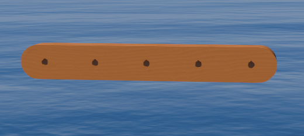
docs/images/components/peg-board.pngThe game's peg board, 1 to 6 slots or 12 (two rows of six). Checks hung tiles against the answer, set per slot with Answer From.
| Field | What it does |
|---|---|
| Size | Slots. 12 = two rows of six. |
| Start Marker | Marker at the first slot's end. Looks only. |
| Answer From | One dropdown per slot listing the Displays and Sound Peg Answers in the puzzle. For a Display with more than one flap, pick the flap too (flap 1 is the far left). If the puzzle has only one Peg Board and only one Display with as many flaps as the board has slots, this fills itself in (slot 1 follows flap 1, and so on). The answer follows them. A slot left on None can never be correct. |
| Validator | Optional. Left empty, the puzzle's only Validator is used. Kept up to date for you: correct = SetCorrect(true) + TurnOn(), wrong = SetCorrect(false) + TurnOn(), pegs missing = SetCorrect(false) + TurnOff(). |
| Event | Fires when |
|---|---|
| On Correct | A peg changed and the board matches. |
| On Incorrect | A peg changed; full but wrong. |
| On Missing Pegs | A peg changed; slots still empty. |
| Value | What it is |
|---|---|
SlotCount (int) |
Slots on the board. |
IsCorrect (bool) |
Matches the answer now. |
| Function | What it does |
|---|---|
GetSlot(int slot) → PegSlot |
What is in a slot (0 is the first). |
PegSlot fields: Type (Empty, Image, Sound), ImageSet and Image (Image only; -1 if unknown), Sound (Sound only).
PegSlot s = board.GetSlot(2);
if (s.Type == PuzzlePegType.Sound) Debug.Log("sound " + s.Sound);
Peg Tile
PuzzlePegTile
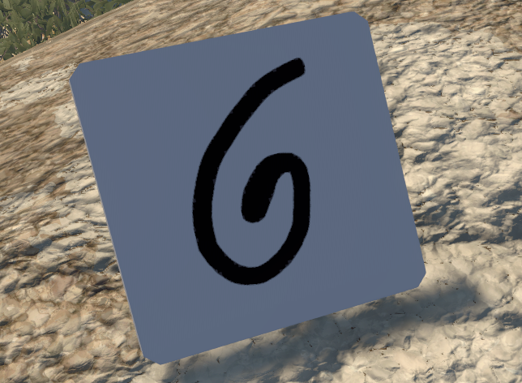
docs/images/components/peg-tile.pngA game peg tile showing one picture. Players carry it and hang it on a Peg Board.
| Field | What it does |
|---|---|
| Image Set | Shapes, Peg, Emotes, Scribbles, Custom. |
| Image | Picture number in the set. |
| Custom Sheet | For Custom: one square texture, 4 x 4 grid, top-left cell blank, then images 1 to 8. |
| Invisible Ink View | Only shows through a telescope with Invisible Ink View on; otherwise blank. |
| Value | What it is |
|---|---|
ImageSet (PuzzlePegSet) / Image (int) |
The set and picture number. |
Sound Peg
PuzzleSoundPeg
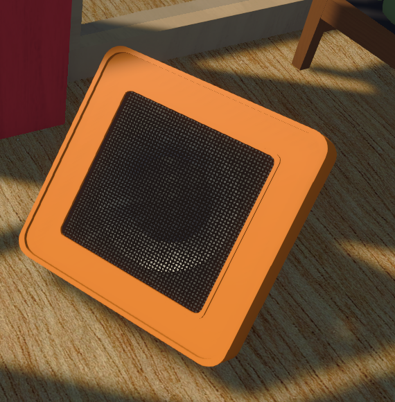
docs/images/components/sound-peg.pngThe game's speaker peg tile: a grabbable tile that plays a tune.
| Field | What it does |
|---|---|
| Sound | One of nine tracks, looping in sync: Sound1 to Sound9. |
| Custom Clip | Plays instead of the track. Won't stay in step with the tracks. |
| Value | What it is |
|---|---|
Sound (PuzzleSoundTrack) |
The track it plays. |
Sound Peg Answer
PuzzleSoundPegAnswer
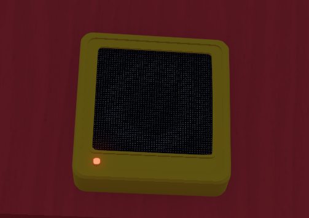
docs/images/components/sound-peg-answer.pngThe game's fixed speaker that plays the tune to match. Every time the puzzle starts it plays the sound of a different Sound Peg from the puzzle (a sound only repeats if the puzzle has more than one peg with it), and it is silent while the puzzle is off. With fewer Sound Pegs than speakers, the extra speakers stay silent (the editor warns about this when the puzzle has a Peg Board). A Peg Board can use it as its answer. It has no fields.
| Value | What it is |
|---|---|
CurrentSound (string) |
What it plays: sound_1 to sound_9, or sound_ and a custom name; empty while silent. |
Telescope
PuzzleTelescope
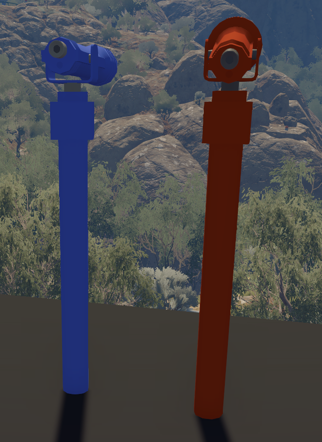
docs/images/components/telescope.pngThe game's fixed telescope.
| Field | What it does |
|---|---|
| Invisible Ink View | On: the Invisible Ink challenge's filter, which shows peg tiles that have Invisible Ink View on. Off (the default): a plain telescope. |
Feedback
Count Input
PuzzleCountInput
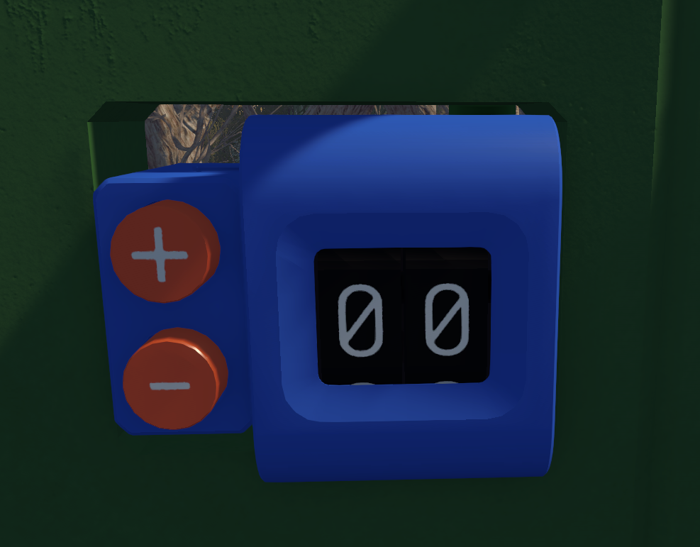
docs/images/components/count-input.pngThe game's counter with + and - buttons (Perspective Counting), 0 to 99. Point a Count Validator's Input at it, or use On Value Changed.
| Event | Fires when |
|---|---|
| On Value Changed | The number changed (button or SetValue). |
| Value | What it is |
|---|---|
Value (int) |
The number. |
| Function | What it does |
|---|---|
SetValue(int value) |
Host only. Kept between 0 and 99. |
Count Validator
PuzzleCountValidator
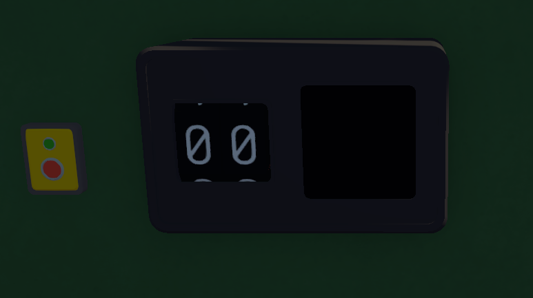
docs/images/components/count-validator.pngThe game's counter validator (Perspective Counting). Shows 00 until Check(), then its dials count up to the answer a script sets with SetAnswer (never right until it is set) and it shows a tick or cross. Changing the counter afterwards resets it to 00.
| Field | What it does |
|---|---|
| Input | The counter it checks. Left empty, the puzzle's only Count Input is used. |
| Poke Button | Optional. Pressing it calls Check(); it turns on and off with the screen and re-arms after each result (Auto Enable Seconds is locked at 0). |
| Event | Fires when |
|---|---|
| On Incorrect | Check() found a wrong number. (The right number wins the puzzle: PuzzleSDK.Win().) |
| Value | What it is |
|---|---|
Answer (int) |
The number Check() wants; -1 until SetAnswer is called. |
IsCorrect (bool) |
The Input matched at the last check. |
IsChecking (bool) |
Dials counting, result not shown yet. |
IsOn (bool) |
The screen is on. |
| Function | What it does |
|---|---|
Check() |
Host only. |
SetAnswer(int value) |
Host only. Sets the answer (0 to 99); back to 00 (an off screen stays off). |
TurnOn() / TurnOff() |
Host only. Check() does nothing while off. The screen is always off while the puzzle is switched off; these are remembered and applied when it starts. |
Light
PuzzleLight
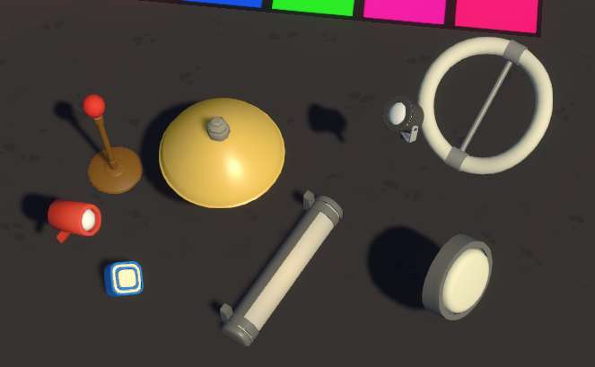
docs/images/components/light.pngA game lamp (Conductor is the small panel light). Starts off: call TurnOn() from On Puzzle Stop to start it on. With it selected in Unity, the Scene view draws its Range and Spot Angle (spotlights show the beam stopping at the first collider). It's only a guide.
| Field | What it does |
|---|---|
| Type | TableRed, Pendant, Spotlight_Black, Spotlight_Red, Tube, Circle, Ring, Conductor. |
| Color | White keeps the lamp's own colour. |
| Range | Metres. 0 = the lamp's own (the mod log lists them). |
| Intensity | Brightness while on. 0 = the lamp's own. |
| Spot Angle | Cone width in degrees, spotlights only. 0 = the lamp's own. |
| Value | What it is |
|---|---|
CurrentColor (Color) |
The lamp's colour. |
IsOn (bool) |
The lamp is on. |
IsParty (bool) |
Party mode is running. |
| Function | What it does |
|---|---|
TurnOn() / TurnOff() |
Host only. |
SetColor(string hex) |
"#FF0000", "FF0000", "#F00" or a name like "red". |
StartParty() |
Host only. Blends through random bright colours, each held 1.5 to 6 s, never fully dark, with a gentle pulse. For Spotlight_Black. |
StopParty() |
Host only. Fades back to white over a second; the lamp stays on. TurnOn(), TurnOff() and SetColor() also end it. |
Progress Bar
PuzzleProgressBar
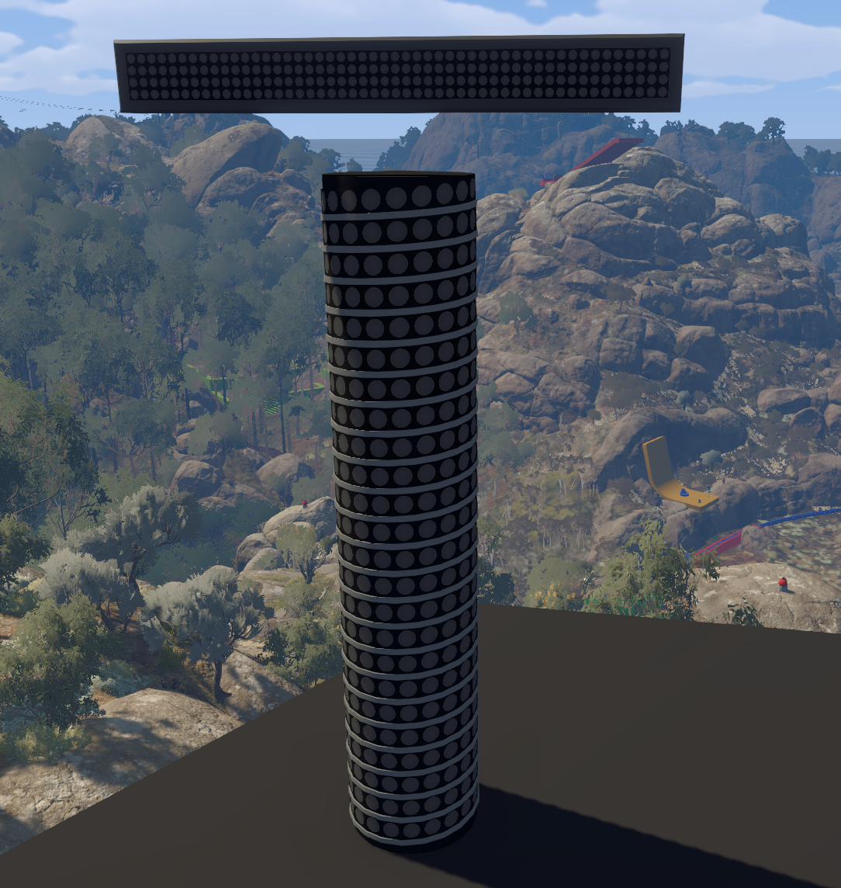
docs/images/components/progress-bar.pngThe game's dot-matrix progress bar. Can be scaled. Its look is automatic: a flash on Increment(), victory when full, failure after Fail().
| Field | What it does |
|---|---|
| Style | Straight or Spiral (Memory Bombs). |
| Total | Progress at which it is full. |
| Event | Fires when |
|---|---|
| On Full | The bar became full. |
| Value | What it is |
|---|---|
Total (int) |
Progress at which it is full. |
Progress (int) |
Current progress. Starts at 0. |
IsFull (bool) |
The bar is full. |
| Function | What it does |
|---|---|
SetTotal(int value) |
Host only. Progress above it is cut down. |
Increment() |
Host only. +1, nothing once full. |
Fail() |
Host only. Failure look for a second, then empties. |
Reset() |
Host only. Empty, normal look. |
Timer
PuzzleTimer
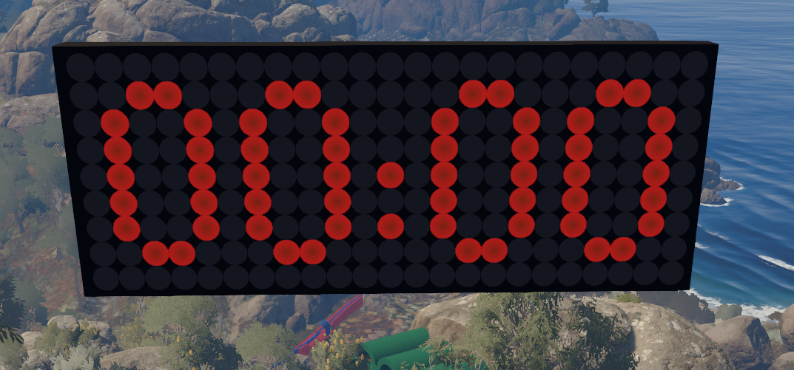
docs/images/components/timer.pngThe game's countdown clock. Can be scaled.
| Field | What it does |
|---|---|
| Duration | Seconds it counts down from. |
| Progress Bars | Optional. These bars drain from full to empty as the time runs out. |
| Event | Fires when |
|---|---|
| On Finished | It reached 0:00. |
| Value | What it is |
|---|---|
Duration (float) |
Seconds it counts down from. |
TimeLeft (float) |
Seconds left. |
IsRunning (bool) |
Counting down. |
| Function | What it does |
|---|---|
StartTimer() |
Host only. Starts from the full duration, or continues if paused. |
PauseTimer() |
Host only. |
ResetTimer() |
Host only. Stops and shows 00:00. |
SetDuration(float seconds) |
Host only. Used from the next start after a reset or finish. |
Validator
PuzzleValidator
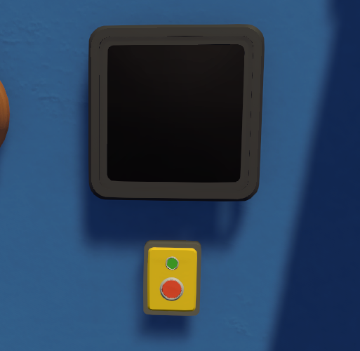
docs/images/components/validator.pngThe game's check / cross screen. Set the answer with SetCorrect, then Check() plays a 5-second animation and shows the result. It is always off while the puzzle is switched off; TurnOn() / TurnOff() are remembered and applied when the puzzle starts.
| Field | What it does |
|---|---|
| Poke Button | Optional. Pressing it calls Check(); it turns on and off with the screen and re-arms after each result (Auto Enable Seconds is locked at 0). |
| Event | Fires when |
|---|---|
| On Incorrect | After Check(): the answer was wrong. (Right wins the puzzle: PuzzleSDK.Win().) |
| Value | What it is |
|---|---|
IsCorrect (bool) |
The answer last set. |
IsOn (bool) |
The screen is on. |
| Function | What it does |
|---|---|
SetCorrect(bool value) |
Host only. Nothing shows until Check(). |
Check() |
Host only. Does nothing while off. |
TurnOn() |
Host only. Blank, ready to check. While the puzzle is off it is only remembered and shows when the puzzle starts. |
TurnOff() |
Host only. Cancels a check in progress. |
Tower
Gourd Plinth
PuzzleGourdPlinth
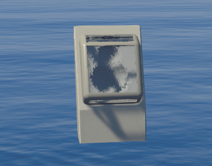
docs/images/components/gourd-plinth.pngOne slot of the gourd tower. Open its flap and players can place a gourd (it can't be taken back). Starts closed.
| Event | Fires when |
|---|---|
| On Gourd Placed | A gourd was placed. |
| Value | What it is |
|---|---|
IsOpen (bool) |
The flap is open. |
HasGourd (bool) |
A gourd is in the slot. |
| Function | What it does |
|---|---|
Open() |
Host only. Stays open until Close(). |
HoldToOpen() |
Host only. For a Hold Button's On Pressed: open while held. |
Close() |
Host only. |
Tower Button
TowerButton
For a modded gourd tower. Goes next to the Hold Button players hold. While held, the first plinth without a gourd is open. In-game only as many plinths stay as there are modded puzzles loaded.
| Field | What it does |
|---|---|
| Plinths | The plinths in the order they fill, bottom first. |
| Value | What it is |
|---|---|
SlotCount (int) |
Plinths in use. |
FilledCount (int) |
Plinths with a gourd. |
IsFull (bool) |
Every plinth in use has a gourd. |
Other
Firework Launcher
PuzzleFireworkLauncher
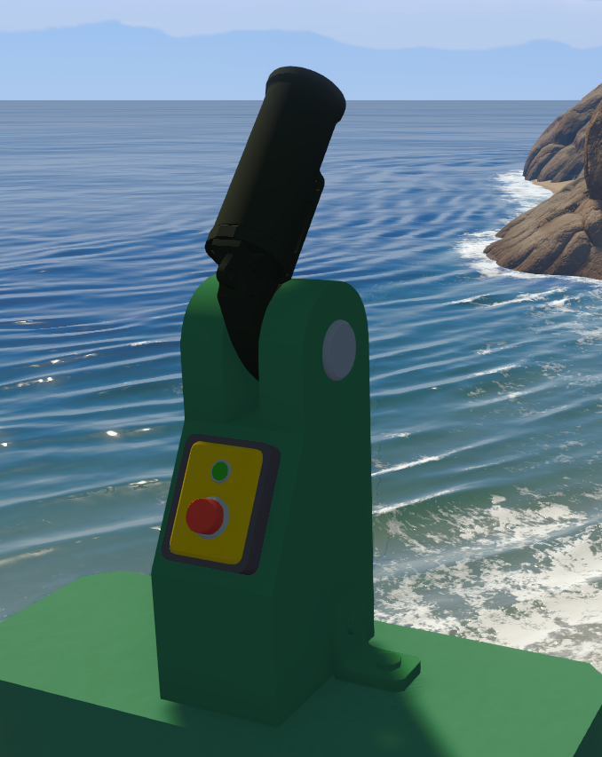
docs/images/components/firework-launcher.pngThe game's flare launcher (Flare Run), without its button.
Warning: It spawns the wrong particles.
| Field | What it does |
|---|---|
| Color | Flare's sparks and light. White = the game's own. |
| Function | What it does |
|---|---|
Fire() |
Host only. Ignored while cooling down. |
Glass
PuzzleGlass
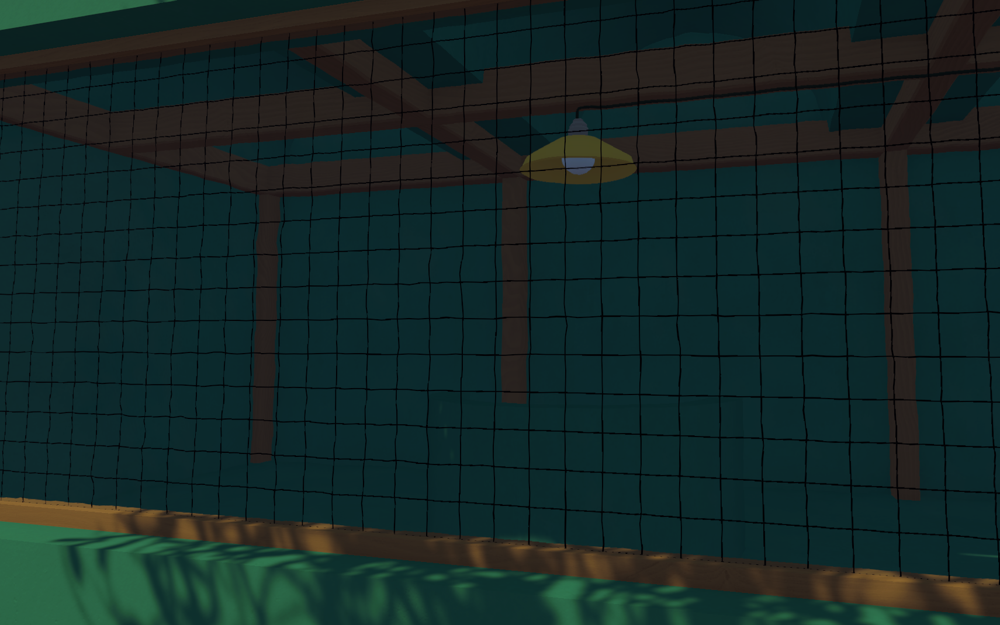
docs/images/components/glass.pngTurns this object's mesh into the game's puzzle glass: any mesh, any size (a scaled cube makes a pane). In-game it gets the game's glass material and muffles or blocks voices. Also works on a parent for all meshes under it. The editor shows a preview.
| Field | What it does |
|---|---|
| Style | Window, Rippled (gourd boxes), Clear. |
| Sound | Muffles, Thick (more muffled), Soundproof (blocks voices). |
| Wire | Adds the black wire mesh of the soundproof windows. |
Intercom
PuzzleIntercom
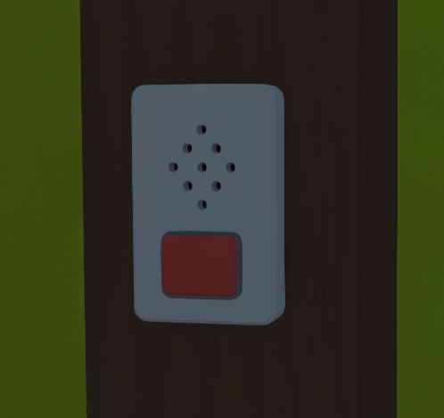
docs/images/components/intercom.pngThe game's wall microphone. Players hold it to talk to intercom speakers.
Warning: This doesn't work yet.
Intercom Speaker
PuzzleIntercomSpeaker
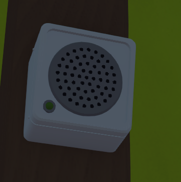
docs/images/components/intercom-speaker.pngThe game's wall speaker that plays what is said into an intercom.
Warning: This doesn't work yet.
No Items Gate
PuzzleNoItemsGate
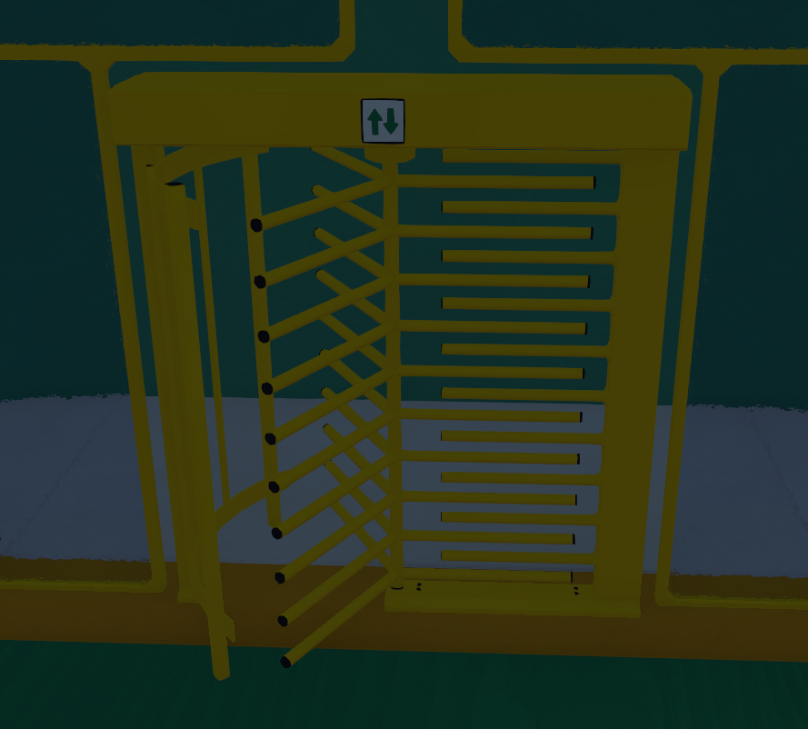
docs/images/components/no-items-gate.pngThe game's turnstile: players pass one at a time.
| Field | What it does |
|---|---|
| One Way | On: front to back only (red plaques). Off: both ways (green). |
| Blind Mask | Off: the plain turnstile. On: the blindfold catwalk's. |
Timer Goal
PuzzleTimerGoal
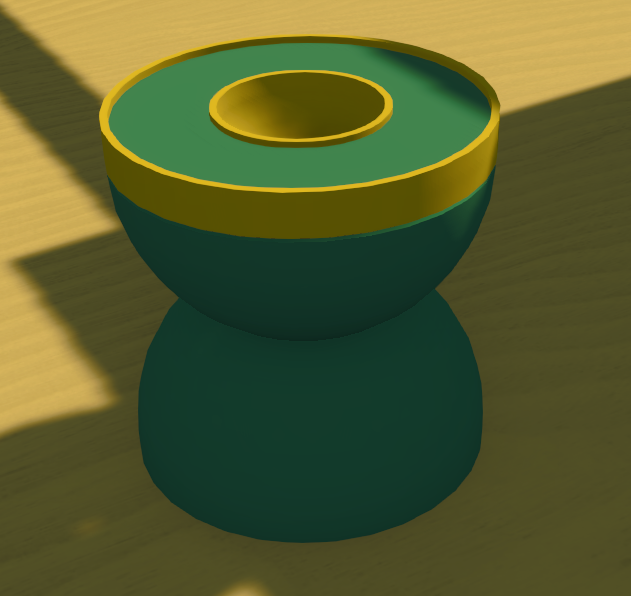
docs/images/components/timer-goal.pngThe game's holder for a timer ball (Obby).
| Event | Fires when |
|---|---|
| On Timer Placed | A timer ball went in. |
Timer Spawner
PuzzleTimerSpawner
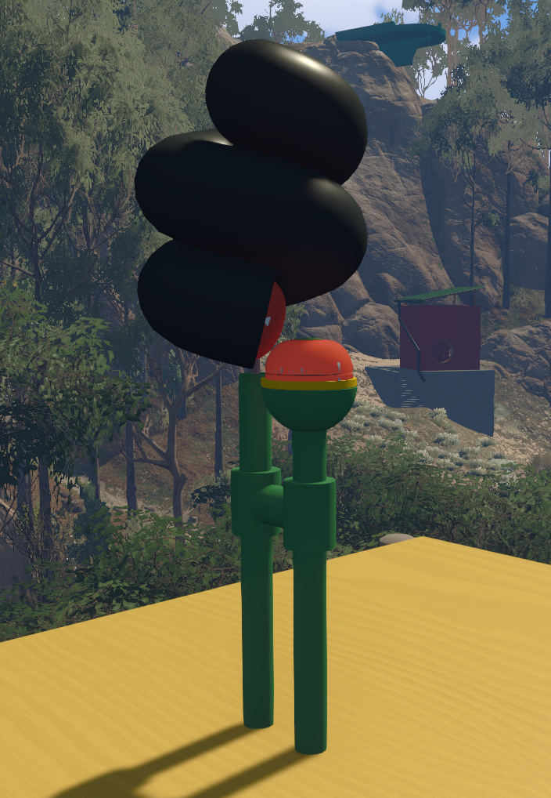
docs/images/components/timer-spawner.pngThe game's timer ball dispenser (Obby). Picking up the ball starts its countdown; at zero it returns to the dispenser.
| Field | What it does |
|---|---|
| Time | Seconds the ball lasts, also the wait for a new one. The game's is 10. |
Vanilla Item
PuzzleVanillaItem
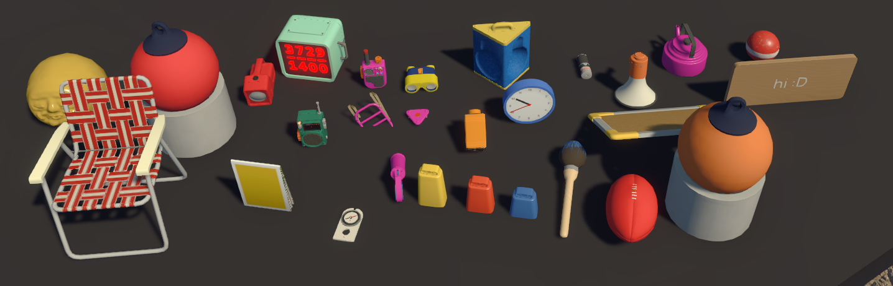
docs/images/components/vanilla-item.pngOne of the game's own items, copied as it is.
Warning: The Flare Gun spawns the wrong particles.
| Field | What it does |
|---|---|
| Item Type | Blindfold, FoldingChair, Torch, FmRadio, WalkieTalkie, Binoculars, XrayGoggles, Clock, Laser, Megaphone, Kettle, CannonBall, PermoSign, SpareSign, GourdHolder, Belt, Backpack, Gps, FoldingMap, Compass, FlareGun, CowbellBig, CowbellMedium, CowbellSmall, Paintbrush, Football, Buoy (the buoy light), BuoyRed. |
| Include Base | Buoy and Buoy Red only. Ticked (the default): the buoy comes on its pedestal. Unticked: just the buoy, a loose item where this object is. The buoy's light on/off state is saved with the game. |
| Default Text | Signs only. Spare Sign: text until a player writes (saved with the game). Permo Sign: fixed text. |
| Item Color | Kettle, Walkie Talkie, Backpack, Belt, Flare Gun. White keeps the game's colour. |
| Flare Color | Flare Gun only. White keeps the game's colour. |
| Saves On Reload | Saved like gourds (see Custom Item). |